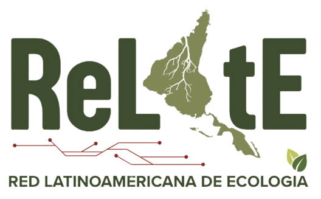

Bienvenidos a RelatE
Este es el sitioweb de la Red Latinoamericana de Ecología - RelatE!

Somos una red de sociedades científicas de ecología.
Notícias
Ecologías desde el SurPeriódicos Científicos
Lista de periódicos en ecología publicados por países latinoamericanos
Nuestros valores
Conocimiento abierto
Conocimiento científico es un activo de los pueblos de América Latina, queines los financian y lo necesitan. Incentivamos la publicación abierta y el compartir de datos e informaciones que permitan que la ciencia ecológica prospere
Ciencia Robusta
La ciencia ecológica es crítica para informar políticas públicas y por ello debe ser robusta en sus métodos, propósitos y conclusiones.
Unión Latinoamericana
Hacemos ecología desde y para el Sur, por lo tanto, unir fuerzas y pensar acciones es más que una oportunidad, pero una obligación